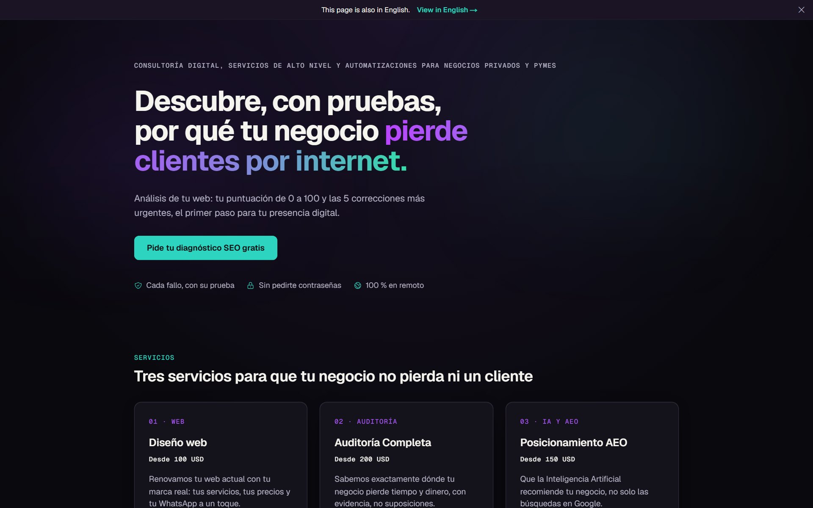
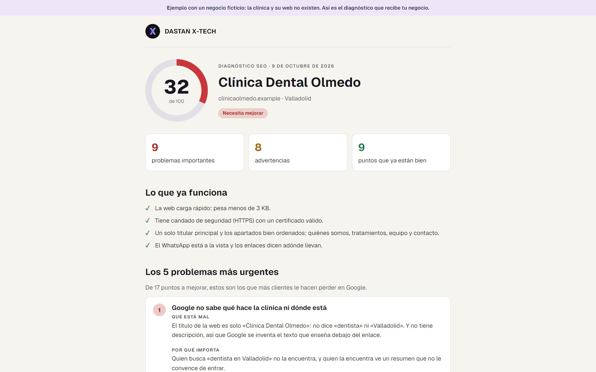
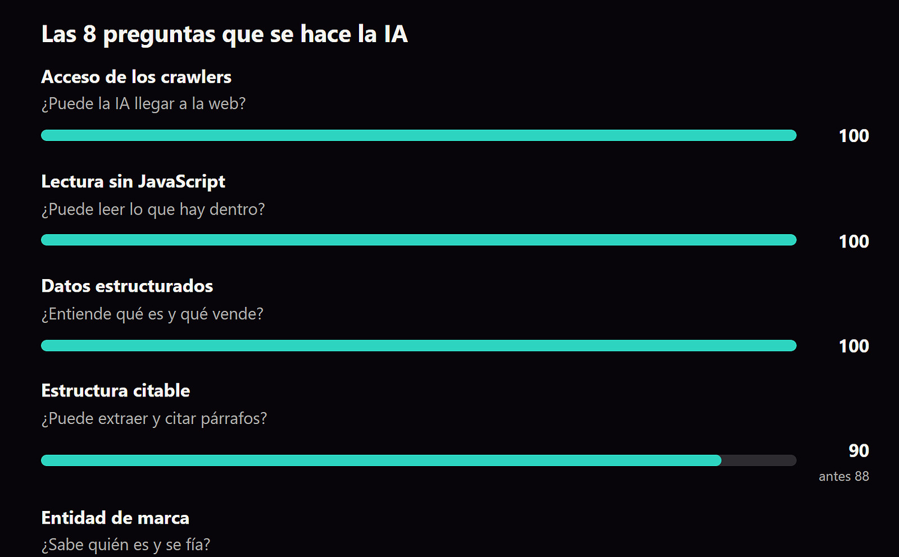
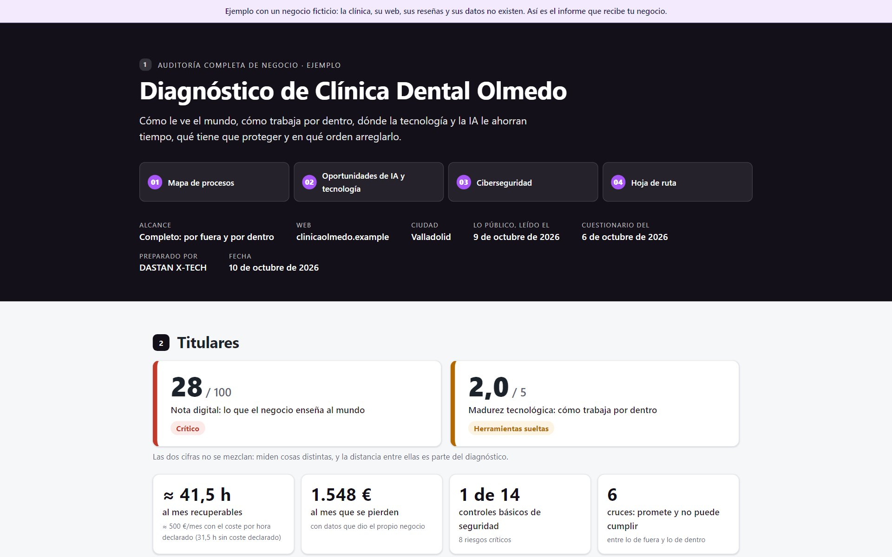
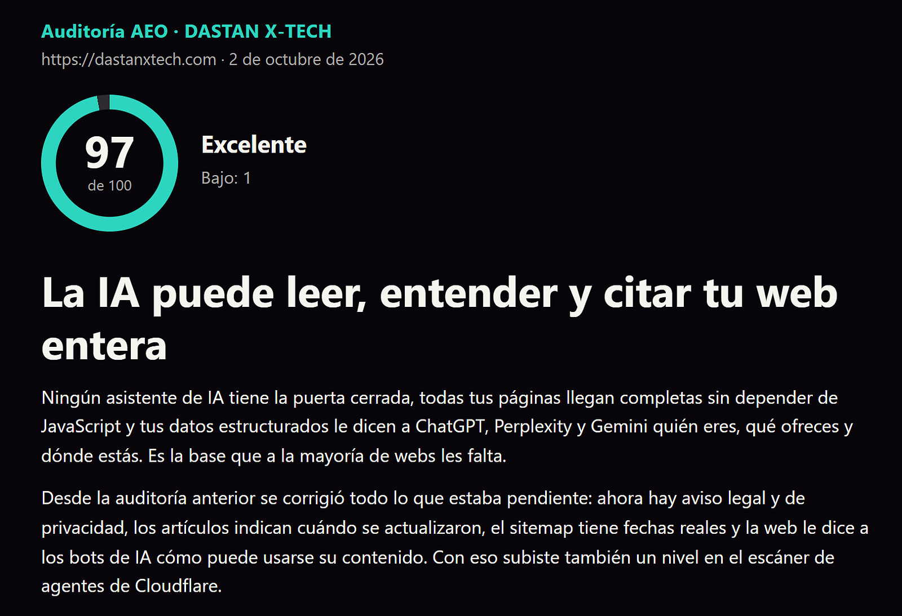

Haces un buen trabajo. Internet no lo refleja.
La web no convence, el WhatsApp no se ve o se contesta tarde, y cuando alguien le pregunta a una IA, recomienda a la competencia.
Y cómo lo hacemos ahora con tu negocio, en cuatro capítulos.



La web no convence, el WhatsApp no se ve o se contesta tarde, y cuando alguien le pregunta a una IA, recomienda a la competencia.
Tu puntuación de 0 a 100 y las 5 correcciones más urgentes, en un PDF. Cada fallo, con su prueba. Gratis si tienes web.
Tus servicios explicados, tus precios claros y tu WhatsApp a un toque. Lista en menos de 48 horas desde que tenemos tu marca y tus contenidos.
Tu ficha ordenada, tus reseñas visibles y un contenido que la IA pueda citar. Así nos pasó a nosotros: nuestra web subió de 94 a 97 sobre 100 en AEO.
Renovamos tu web actual con tu marca real: tus servicios, tus precios y tu WhatsApp a un toque.

Sabemos exactamente dónde tu negocio pierde tiempo y dinero, con evidencia, no suposiciones.

Que la Inteligencia Artificial recomiende tu negocio, no solo las búsquedas en Google.
Déjanos tu nombre, tu web y tu WhatsApp, y te mandamos gratis tu puntuación SEO de 0 a 100 y las 5 correcciones más urgentes, en un PDF.
Pedir mi diagnóstico por WhatsApp